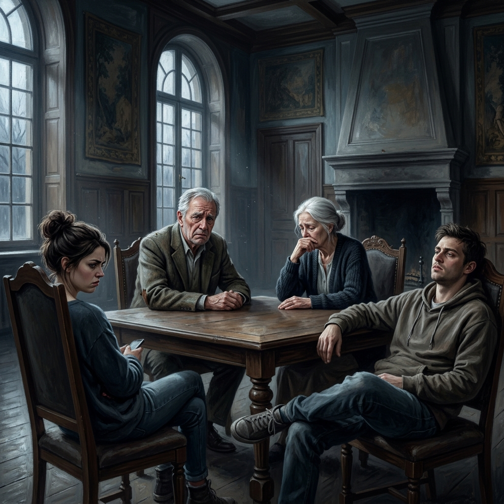
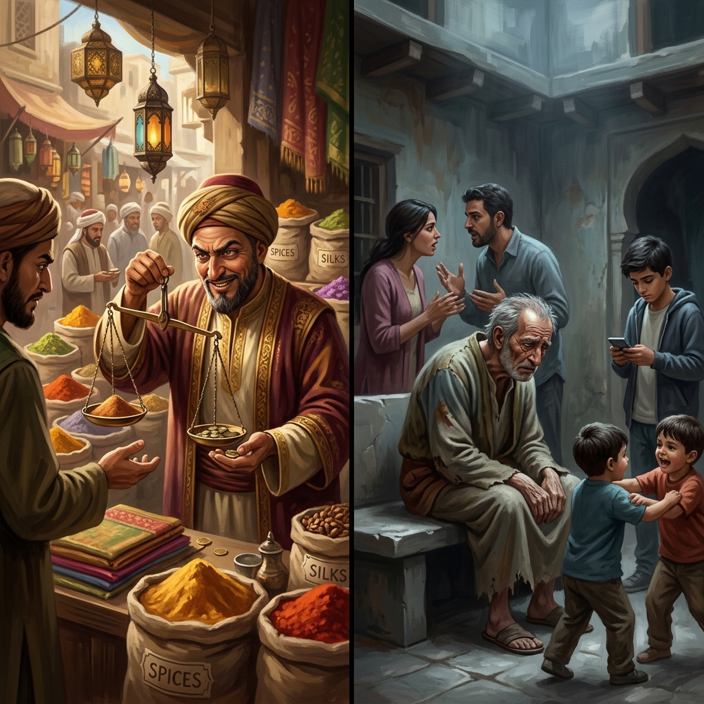
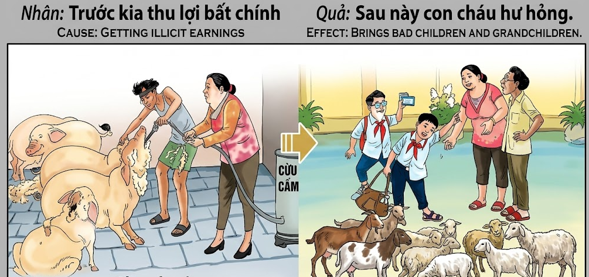

El Fruto Amargo de la AvariciaThe Bitter Fruit of GreedIl Frutto Amaro dell'Avarizia贪婪的苦果ثمار الطمع المرةГорький плод алчностиDie bittere Frucht der GierLe fruit amer de l'avarice貪欲の苦い果実O Fruto Amargo da AvariceQuả Đắng Của Lòng Tham
Quien siembra el engaño para cosechar riquezas injustas, verá cómo la flor de su linaje se marchita en la ingratitud y la deshonra.He who sows deceit to harvest unjust riches will see the flower of his lineage wither in ingratitude and dishonor.Chi semina l'inganno per raccogliere ricchezze ingiuste vedrà il fiore della sua stirpe appassire nell'ingratitudine e nel disonore.播种欺骗以收获不义之财的人，将看到他的血统之花在忘恩负义和耻辱中凋零。من يزرع الخداع ليحصد ثروات غير مشروعة، سيرى زهرة نسله تذبل في نكران الجميل والعار.Тот, кто сеет обман, чтобы собрать неправедное богатство, увидит, как цветок его рода увядает в неблагодарности и бесчестье.Wer Betrug sät, um ungerechten Reichtum zu ernten, wird sehen, wie die Blume seiner Abstammung in Undankbarkeit und Schande verwelkt.Celui qui sème la tromperie pour récolter des richesses injustes verra la fleur de sa lignée se flétrir dans l'ingratitude et le déshonneur.不正な富を得るために欺瞞を蒔く者は、自らの血統の花が恩知らずと不名誉の中で萎れていくのを見ることになるでしょう。Quem semeia o engano para colher riquezas injustas verá a flor da sua linhagem murchar na ingratidão e na desonra.Kẻ gieo rắc sự lừa lọc để thu về những đồng tiền bất chính sẽ phải cay đắng nhìn thế hệ sau của mình chìm trong sự ngỗ nghịch và nỗi ô nhục.
La honestidad es el cimiento de cualquier legado duradero. En el complejo engranaje del karma, la manera en que adquirimos nuestro sustento tiñe la energía de todo lo que poseemos y, por extensión, de quienes amamos. Obtener ganancias ilícitas —ya sea mediante el engaño en el comercio, la manipulación de la balanza o la explotación de otros— inyecta un veneno sutil en el núcleo familiar. Las riquezas acumuladas con manos sucias no pueden construir un hogar limpio ni corazones agradecidos.
El universo, que todo lo equilibra, manifiesta este desvío moral en la conducta de la descendencia. La falta de integridad de los padres se refleja, a menudo, en hijos y nietos que carecen de valores, respeto y gratitud. Quien robó al prójimo termina siendo "robado" emocionalmente por sus propios seres queridos, experimentando la soledad rodeado de la abundancia que él mismo forjó con deshonestidad. La verdadera riqueza de una persona no se mide por su oro, sino por la nobleza de quienes llevan su sangre.
Honesty is the foundation of any lasting legacy. In the complex gears of karma, the way we acquire our livelihood stains the energy of everything we possess and, by extension, those we love. Obtaining illicit earnings—whether through deceit in trade, manipulation of the scales, or exploitation of others—injects a subtle poison into the family core. Riches accumulated with dirty hands cannot build a clean home or grateful hearts.
The universe, which balances everything, manifests this moral detour in the conduct of the offspring. The parents' lack of integrity is often reflected in children and grandchildren who lack values, respect, and gratitude. He who stole from his neighbor ends up being "stolen" from emotionally by his own loved ones, experiencing loneliness surrounded by the abundance he himself forged with dishonesty. A person's true wealth is not measured by their gold, but by the nobility of those who carry their blood.
L'onestà è il fondamento di ogni eredità duratura. Nei complessi ingranaggi del karma, il modo in cui acquisiamo il nostro sostentamento macchia l'energia di tutto ciò que possediamo e, per estensione, di coloro que amiamo. Ottenere guadagni illeciti — sia attraverso l'inganno nel commercio, la manipolazione della bilancia o lo sfruttamento degli altri — inietta un veleno sottile nel nucleo familiare. Le ricchezze accumulate con mani sporche non possono costruire una casa pulita o cuori grati.
L'universo, que bilancia tutto, manifesta questa deviazione morale nella condotta della prole. La mancanza di integrità dei genitori si riflette spesso in figli e nipoti que mancano di valori, rispetto e gratitudine. Chi ha rubato al prossimo finisce per essere "derubato" emotivamente dai propri cari, sperimentando la solitudine circondato dall'abbondanza que egli stesso ha forgiato con disonestà. La vera ricchezza di una persona non si misura dal suo oro, ma dalla nobiltà di chi porta il suo sangue.
诚实是任何持久遗产的基石。在复杂的业力齿轮中，我们获得生计的方式污染了我们所拥有的一切物品的能量，并以此类推，影响了我们所爱的人。获得非法收入——无论是通过贸易欺骗、操纵秤，还是剥削他人——都会向家庭核心注入一种微妙的毒药。用肮脏的手积累的财富无法建立一个洁净的家或感恩的心。
平衡一切的宇宙在后代的行为中体现了这种道德偏离。父母廉正的缺失往往体现在那些缺乏价值观、尊重和感恩的子女和子孙身上。偷窃邻居的人最终会被自己的亲人情感上“偷窃”，在自己用欺诈铸就的富足中体验孤独。一个人的真正财富不是通过他们的金子来衡量的，而是通过那些携带他们血液的人的高贵来衡量的。
الأمانة هي أساس أي إرث دائم. في تروس الكارما المعقدة، تلطخ الطريقة التي نكتسب بها رزقنا طاقة كل ما نمتلكه، وبالتبعية، طاقة من نحب. إن الحصول على مكاسب غير مشروعة - سواء من خلال الخداع في التجارة ، أو التلاعب بالموازين ، أو استغلال الآخرين - يحقن سماً خفياً في صميم الأسرة. الثروات المتراكمة بأيدي متسخة لا يمكنها بناء منزل نظيف أو قلوب ممتنة.
الكون ، الذي يوازن كل شيء ، يظهر هذا الانحراف الأخلاقي في سلوك النسل. غالباً ما ينعكس افتقار الوالدين للنزاهة في الأبناء والأحفاد الذين يفتقرون إلى القيم والاحترام والامتنان. من سرق من جاره ينتهي به الأمر بأن يُسرق عاطفياً من قبل أحبائه ، حيث يعاني من الوحدة وسط الوفرة التي صاغها هو نفسه بعدم الأمانة. إن الثروة الحقيقية للشخص لا تقاس بذهبه ، بل بنبل أولئك الذين يحملون دمه.
Честность — это фундамент любого прочного наследия. В сложных шестеренках кармы то, как мы зарабатываем на жизнь, окрашивает энергию всего, чем мы владеем, и, как следствие, тех, кого мы любим. Получение незаконных доходов — будь то путем обмана в торговле, манипуляций с весами или эксплуатации других — вводит тонкий яд в семейное ядро. Богатство, накопленное грязными руками, не может построить чистый дом или благодарные сердца.
Вселенная, которая уравновешивает всё, проявляет это моральное отклонение в поведении потомства. Отсутствие порядочности у родителей часто отражается на детях и внуках, которым не хватает ценностей, уважения и благодарности. Тот, кто украл у ближнего, в итоге оказывается «обворованным» эмоционально своими собственными близкими, испытывая одиночество в окружении изобилия, которое он сам создал нечестным путем. Истинное богатство человека измеряется не его золотом, а благородством тех, кто несет его кровь.
Ehrlichkeit ist das Fundament jedes bleibenden Vermächtnisses. In den komplexen Getrieben des Karmas befleckt die Art und Weise, wie wir unseren Lebensunterhalt verdienen, die Energie von allem, was wir besitzen, und damit auch derer, die wir lieben. Die Erzielung unrechtmäßiger Einnahmen – sei es durch Betrug im Handel, Manipulation der Waage oder Ausbeutung anderer – injiziert ein subtiles Gift in den Familienkern. Reichtum, das mit schmutzigen Händen angehäuft wurde, kann kein sauberes Zuhause oder dankbare Herzen aufbauen.
Das Universum, das alles ausgleicht, manifestiert diesen moralischen Umweg im Verhalten der Nachkommen. Die mangelnde Integrität der Eltern spiegelt sich oft in Kindern und Enkelkindern wider, denen es an Werten, Respekt und Dankbarkeit mangelt. Wer seinen Nächsten bestohlen hat, wird am Ende von seinen eigenen Lieben emotional „bestohlen“ und erlebt Einsamkeit inmitten des Überflusses, den er selbst durch Unehrlichkeit geschaffen hat. Der wahre Reichtum eines Menschen misst sich nicht an seinem Gold, sondern am Adel derer, die sein Blut tragen.
L'honnêteté est le fondement de tout héritage durable. Dans les rouages complexes du karma, la manière dont nous acquérons nos moyens de subsistance tache l'énergie de tout ce que nous possédons et, par extension, de ceux que nous aimons. L'obtention de gains illicites — que ce soit par la tromperie commerciale, la manipulation des balances ou l'exploitation d'autrui — injecte un poison subtil au cœur de la famille. Les richesses accumulées avec des mains sales ne pueden construire un foyer propre ou des cœurs reconnaissants.
L'univers, qui équilibre tout, manifeste ce détour moral dans la conduite de la progéniture. Le manque d'intégrité des parents se reflète souvent dans des enfants et des petits-enfants qui manquent de valeurs, de respect et de gratitude. Celui qui a volé son prochain finit par être « volé » émotionnellement par ses propres proches, vivant la solitude au milieu de l'abondance qu'il a lui-même forgée par la malhonnêteté. La véritable richesse d'une personne ne se mesure pas à son or, mais à la noblesse de ceux qui portent son sang.
誠実さは、永続的な遺産の基礎です。カルマの複雑な歯車の中で、私たちが生計を立てる方法は、私たちが所有するすべてのもの、そしてひいては私たちが愛する人々のエネルギーを染めます。商売上の欺瞞、秤の操作、他人の搾取など、不正な利益を得ることは、家族の核に微妙な毒を注入することになります。汚れた手で蓄えられた富は、清らかな家庭や感謝の心を築くことはできません。
すべてをバランスさせる宇宙は、この道徳的な逸脱を子孫の行動に反映させます。親の誠実さの欠如は、価値観、尊敬、感謝の念を欠いた子供や孫に反映されることがしばしばあります。隣人から盗んだ者は、最終的に自分の愛する人によって感情的に「盗まれ」、不誠実さによって自ら築き上げた豊かさに囲まれながら孤独を経験することになります。人の真の富は、金で測られるのではなく、その血を引く者たちの高潔さによって測られるのです。
A honestidade é o alicerce de qualquer legado duradouro. Nas complexas engrenagens do karma, a maneira como adquirimos o nosso sustento tinge a energia de tudo o que possuímos e, por extensão, de quem amamos. Obter ganhos ilícitos — seja através do engano no comércio, da manipulação da balança ou da exploração de outros — injecta um veneno subtil no núcleo familiar. As riquezas acumuladas com mãos sujas não podem construir um lar limpo nem corações agradecidos.
O universo, que tudo equilibra, manifesta este desvio moral na conduta da descendência. A falta de integridade dos pais reflecte-se, muitas vezes, em filhos e netos que carecem de valores, respeito e gratidão. Quem roubou ao próximo acaba por ser "roubado" emocionalmente pelos seus próprios entes queridos, experimentando a solidão rodeado da abundância que ele próprio forjou com desonestidade. A verdadeira riqueza de uma pessoa não se mede pelo seu ouro, mas pela nobreza de quem carrega o seu sangue.
Lòng trung thực chính là nền móng của một di sản bền vững. Trong guồng quay phức tạp của nhân quả, cách chúng ta kiếm kế sinh nhai sẽ nhuộm màu năng lượng cho mọi thứ chúng ta sở hữu và ảnh hưởng trực tiếp đến những người ta yêu thương. Thu lợi bất chính — dù là qua việc gian lận trong buôn bán, tráo đổi bàn cân hay bóc lột sức lao động của người khác — cũng giống như tiêm một liều thuốc độc vào tận gốc rễ gia đình. Sự giàu sang tích tụ từ đôi bàn tay nhúng chàm không bao giờ xây dựng được một mái ấm thanh sạch hay những trái tim biết ơn.
Vũ trụ, nơi sự công bằng luôn hiện hữu, sẽ phản ánh sự sai lệch đạo đức này qua hành vi của thế hệ sau. Sự thiếu liêm chính của cha mẹ thường để lại hệ quả nơi con cháu — những kẻ lớn lên thiếu hụt giá trị sống, sự tôn trọng và lòng hiếu thảo. Kẻ từng lừa lọc người dưng cuối cùng lại bị chính những người thân yêu nhất 'tước đoạt' đi tình cảm, phải nếm trải nỗi cô độc giữa đống của cải phù phiếm được xây dựng trên sự gian dối. Giá trị thật sự của một người không nằm ở số vàng họ tích trữ, mà ở phẩm giá của những người mang dòng máu của họ.
El Mercader de Isfahán
The Merchant of Isfahan
Il Mercante di Isfahan
伊斯法罕的商人
تاجر أصفهان
Купец из Исфахана
Der Kaufmann von Isfahan
Le marchand d'Ispahan
イスファハンの商人
O Mercador de Isfahan
Tay Buôn Thành Isfahan
En el vibrante mercado de Isfahán, vivía un mercader llamado Farzad que se enorgullecía de su astucia. Farzad había descubierto trucos para que sus telas parecieran más finas y sus especias más pesadas. Con el tiempo, acumuló una fortuna inmensa, convencido de que estaba asegurando el futuro de sus hijos. "El mundo es para los listos", decía mientras ajustaba secretamente sus balanzas.
Sin embargo, a medida que sus hijos crecían, Farzad notó con tristeza que el oro no compraba el amor. Sus herederos, acostumbrados a la opulencia sin esfuerzo, se volvieron perezosos, arrogantes y profundamente irrespetuosos hacia él. En su vejez, Farzad se sentaba solo en su gran mansión mientras sus hijos discutían sobre cómo se repartirían su herencia antes de que él siquiera hubiera muerto.
Un antiguo cliente, engañado años atrás, pasó por allí y le dijo: "Farzad, has llenado tus cofres de monedas, pero has dejado tus manos vacías de ejemplo. El peso que quitaste a tus especias es el peso que ahora le falta al alma de tus hijos". Farzad comprendió entonces que el precio de su astucia había sido su propia familia.
In the vibrant market of Isfahan, lived a merchant named Farzad who took pride in his cleverness. Farzad had discovered tricks to make his fabrics look finer and his spices heavier. Over time, he accumulated an immense fortune, convinced that he was securing his children's future. "The world is for the smart," he would say while secretly adjusting his scales.
However, as his children grew, Farzad noticed with sadness that gold did not buy love. His heirs, accustomed to effort-free opulence, became lazy, arrogant, and deeply disrespectful toward him. In his old age, Farzad sat alone in his large mansion while his children argued about how they would divide their inheritance before he had even died.
One old customer, cheated years ago, passed by and said: "Farzad, you have filled your chests with coins, but you have left your hands empty of example. The weight you took from your spices is the weight your children's souls now lack." Farzad then understood that the price of his cleverness had been his own family.
Nel vivace mercato di Isfahan, viveva un mercante di nome Farzad que era orgoglioso della sua astuzia. Farzad aveva scoperto trucchi para far sembrare i suoi tessuti più fini e le sue spezie più pesanti. Col tempo acumulò un'immensa fortuna, convinto di assicurare il futuro dei suoi figli. "Il mondo è dei furbi", diceva mentre regolava segretamente le sue bilance.
Tuttavia, man mano que i suoi figli crescevano, Farzad notò con tristezza que l'oro non comprava l'amore. I suoi eredi, abituati all'opulenza senza sforzo, diventarono pigri, arroganti e profondamente irrispettosi verso di lui. Nella sua vecchiaia, Farzad sedeva solo nella sua grande villa mentre i suoi figli discutevano di come avrebbero diviso l'eredità prima ancora que morisse.
Un vecchio cliente, truffato anni prima, passò di lì e disse: "Farzad, hai riempito i forzieri di monete, ma hai lasciato le mani vuote di esempio. Il peso que hai tolto alle tue spezie è il peso que ora manca all'anima dei tuoi figli". Farzad capì allora que il prezzo della sua astuzia era stata la sua stessa famiglia.
在充满活力的伊斯法罕市场，住着一个名叫 Farzad 的商人，他以自己的聪明才智为荣。Farzad 发现了一些诡计，使他的织物看起来更精美，香料看起来更重。随着时间的推移，他积累了巨大的财富，坚信自己正在保障孩子们的未来。“世界是属于聪明人的，”他在秘密调整秤的时候会这样说。
然而，随着孩子们长大，Farzad 悲伤地注意到，金钱买不到爱。他的继承人们习惯了不劳而获的富足，变得懒惰、傲慢，对他极其不尊重。在晚年，Farzad 独自坐在他的大豪宅里，而他的孩子们却在争论他甚至还没死之前他们将如何分配遗产。
一位多年前被骗的老客户路过时说：“Farzad，你已经在箱子里装满了硬币，但你的手里却没有榜样。你从香料里拿走的重量，就是你孩子灵魂现在所缺少的重量。”Farzad 随后明白了，他聪明的代价竟然是他自己的家人。
في سوق أصفهان النابض بالحياة، عاش تاجر يدعى فرزاد يفتخر بذكائه. كان فرزاد قد اكتشف حيلاً تجعل أقمشته تبدو أجود وتوابله أثقل. ومع مرور الوقت، جمع ثروة هائلة، مقتنعاً بأنه يؤمن مستقبل أبنائه. وكان يقول وهو يضبط موازينه سراً: 'العالم للأذكياء'.
ومع ذلك، ومع كبر أبنائه، لاحظ فرزاد بحزن أن الذهب لا يشتري الحب. أصبح ورثته، الذين اعتادوا على الثراء دون جهد، كسالى ومتغطرسين وغير محترمين تجاهه بشكل كبير. وفي شيخوخته، كان فرزاد يجلس وحيداً في قصره الكبير بينما يتجادل أبناؤه حول كيفية تقسيم ميراثهم قبل وفاته.
مر أحد الزبائن القدامى، الذين تعرضوا للغش منذ سنوات، وقال: 'فرزاد، لقد ملأت صناديقك بالعملات المعدنية، لكنك تركت يديك خاليتين من القدوة. الوزن الذي أخذته من توابلك هو الوزن الذي تفتقر إليه أرواح أبنائك الآن'. أدرك فرزاد حينها أن ثمن ذكائه كان عائلته نفسها.
На оживленном рынке Исфахана жил купец по имени Фарзад, который гордился своей хитростью. Фарзад открыл уловки, позволяющие его тканям казаться тоньше, а специям — тяжелее. Со временем он накопил огромное состояние, убежденный, что обеспечивает будущее своих детей. «Мир принадлежит умным», — говорил он, тайно подкручивая весы.
Однако по мере того, как дети росли, Фарзад с грустью замечал, что золото не покупает любовь. Его наследники, привыкшие к роскоши без усилий, стали ленивыми, высокомерными и глубоко непочтительными к нему. В старости Фарзад сидел один в своем огромном особняке, а его дети спорили о том, как они поделят наследство еще до того, как он умер.
Один старый покупатель, обманутый годы назад, прошел мимо и сказал: «Фарзад, ты наполнил свои сундуки монетами, но оставил свои руки пустыми без примера для подражания. Вес, который ты отнял у своих специй, — это вес, которого теперь не хватает душам твоих детей». Фарзад понял тогда, что ценой его хитрости стала его собственная семья.
Auf dem lebhaften Markt von Isfahan lebte ein Kaufmann namens Farzad, der stolz auf seine Schlauheit war. Farzad hatte Tricks entdeckt, um seine Stoffe feiner und seine Gewürze schwerer erscheinen zu lassen. Mit der Zeit häufte er ein immenses Vermögen an, fest davon überzeugt, dass er die Zukunft seiner Kinder sicherte. „Die Welt gehört den Schlauen“, sagte er, während er heimlich seine Waage justierte.
Doch als seine Kinder heranwuchsen, bemerkte Farzad mit Trauer, dass Gold keine Liebe kaufte. Seine Erben, die an mühelosen Reichtum gewöhnt waren, wurden faul, arrogant und ihm gegenüber tief respektlos. Im Alter saß Farzad allein in seinem großen Herrenhaus, während seine Kinder darüber stritten, wie sie sein Erbe aufteilen würden, noch bevor er überhaupt gestorben war.
Ein alter Kunde, der vor Jahren betrogen worden war, kam vorbei und sagte: „Farzad, du hast deine Truhen mit Münzen gefüllt, aber deine Hände ohne Vorbild gelassen. Das Gewicht, das du deinen Gewürzen genommen hast, ist das Gewicht, das den Seelen deiner Kinder nun fehlt.“ Farzad begriff dann, dass der Preis für seine Schlauheit seine eigene Familie gewesen war.
Dans le marché animé d'Ispahan, vivait un marchand nommé Farzad qui s'enorgueillissait de son astuce. Farzad avait découvert des astuces pour que ses tissus paraissent plus fins et ses épices plus lourdes. Au fil du temps, il accumula une fortune immense, persuadé qu'il assurait l'avenir de ses enfants. « Le monde appartient aux malins », disait-il en ajustant secrètement ses balances.
Cependant, à mesure que ses enfants grandissaient, Farzad remarqua avec tristesse que l'or n'achetait pas l'amour. Ses héritiers, habitués à l'opulence sans effort, devinrent paresseux, arrogants et profondément irrespectueux envers lui. Dans sa vieillesse, Farzad restait seul dans sa grande demeure tandis que ses enfants se disputaient sur la manière dont ils se partageraient l'héritage avant même qu'il ne soit mort.
Un ancien client, trompé des années auparavant, passa par là et dit : « Farzad, tu as rempli tes coffres de pièces, mais tu as laissé tes mains vides d'exemple. Le poids que tu as retiré à tes épices est le poids qui manque maintenant à l'âme de tes enfants ». Farzad comprit alors que le prix de son astuce avait été sa propre famille.
活気あふれるイスファハンの市場に、自らの抜け目のなさを誇るファルザードという商人が住んでいました。ファルザードは、生地をより上質に、スパイスをより重く見せるための手品を発見していました。彼は、子供たちの将来を保障していると確信し、長い年月をかけて莫大な富を築きました。「世界は賢い者のためにある」と彼は言いながら、密かに秤を調節していました。
しかし、子供たちが成長するにつれて、ファルザードは金では愛を買えないことを悲しみとともに気づきました。努力なしの富に慣れた跡取りたちは、怠惰で傲慢になり、彼に対してひどく不遜になりました。晩年、ファルザードは大きな屋敷で一人座り、子供たちは彼が死ぬ前だというのに、相続分をどう分けるかを言い争っていました。
数年前に騙されたかつての客が通りかかり、こう言いました。「ファルザード、お前は箱を硬貨で満たしたが、手はお手本という空の状態にしていたのだ。お前がスパイスから奪った重さは、今、お前の子供たちの魂に欠けている重さなのだ」。ファルザードは、自らの抜け目のなさの代償が、自分の家族であったことを理解しました。
No vibrante mercado de Isfahan, vivia um mercador chamado Farzad que se orgulhava da sua astúcia. Farzad tinha descoberto truques para que os seus tecidos parecessem mais finos e as suas especiarias mais pesadas. Com o tempo, acumulou uma fortuna imensa, convencido de que estava a assegurar o futuro dos seus filhos. "O mundo é para os espertos", dizia enquanto ajustava secretamente as suas balanças.
No entanto, à medida que os seus filhos cresciam, Farzad notou com tristeza que o ouro não comprava o amor. Os seus herdeiros, habituados à opulência sem esforço, tornaram-se preguiçosos, arrogantes e profundamente desrespeitosos para com ele. Na sua velhice, Farzad sentava-se sozinho na sua grande mansão enquanto os seus filhos discutiam sobre como dividiriam a sua herança antes de ele sequer ter morrido.
Um antigo cliente, enganado anos atrás, passou por ali e disse: "Farzad, encheste os teus cofres de moedas, mas deixaste as tuas mãos vazias de exemplo. O peso que tiraste às tuas especiarias é o peso que agora falta à alma dos teus filhos". Farzad compreendeu então que o preço da sua astúcia tinha sido a sua própria família.
Tại khu chợ Isfahan sầm uất, có một thương nhân tên là Farzad luôn tự hào về sự khôn ngoan của mình. Farzad đã khám phá ra những mánh khóe để khiến vải vóc của mình trông mịn hơn và gia vị nặng cân hơn thực tế. Theo thời gian, lão tích trữ được một khối tài sản khổng lồ, tự tin rằng mình đang đảm bảo tương lai vững chắc cho con cái. 'Thế gian này chỉ dành cho những kẻ biết tính toán', lão thường nói vậy khi âm thầm tráo đổi bàn cân.
Thế nhưng, khi những đứa con dần khôn lớn, Farzad mới đau đớn nhận ra vàng bạc không mua được tình thâm. Những kẻ thừa kế của lão, vốn quen với sự nhung lụa mà không phải động tay chân, đã trở nên lười biếng, ngạo mạn và vô lễ với chính cha mình. Ở tuổi xế chiều, lão ngồi cô độc trong dinh thự xa hoa, trong khi lũ con cái đang tranh cãi kịch liệt về việc chia chác gia sản ngay khi lão còn chưa nhắm mắt xuôi tay.
Một người khách cũ — kẻ từng bị lão gian lận năm xưa — đi ngang qua và nói: 'Farzad, lão đã lấp đầy rương hòm bằng tiền bạc, nhưng lại để đôi tay mình trống rỗng về phẩm giá để làm gương. Cái cân mà lão đã đánh tráo trọng lượng khi xưa, chính là thứ mà linh hồn con cái lão đang thiếu hụt bây giờ'. Farzad lúc bấy giờ mới thấu hiểu cái giá của sự 'khôn lỏi' chính là sự tan nát của gia đình mình.

La Inspiración Original
The Original Inspiration
Nguồn cảm hứng ban đầu
L'ispirazione originale
最初的灵感
الإلهام الأصلي
Оригинальное вдохновение
Die ursprüngliche Inspiration
L'inspiration originale
オリジナルのインスピレーション
A ispirazione originale
La historia que hemos relatado en este capítulo está inspirada por el pasaje de la escena original de los murales «Tranh Nhân Quả» (Ilustraciones del Karma) del Templo Linh Ung en Da Nang, capturado en la imagen.
The story we have told in this chapter is inspired by the passage from the original scene of the “Tranh Nhân Quả” (Illustrations of Karma) murals of the Linh Ung Temple in Da Nang, captured in the image.
Câu chuyện chúng tôi kể trong chương này được lấy cảm hứng từ đoạn trích từ cảnh gốc của bức tranh tường “Tranh Nhân Quả” ở chùa Linh Ứng ở Đà Nẵng, được ghi lại trong hình ảnh.

Como se puede apreciar en el pasaje extraído del mural, la causa y su efecto kármico están descritos originalmente en vietnamita y con una breve traducción al inglés. A continuación, te ofrecemos su traducción detallada en los distintos idiomas:
As can be seen in the passage taken from the mural, the cause and its karmic effect are originally described in Vietnamese and with a brief translation into English. Below, we offer you its detailed translation in the different languages:
🇻🇳 Tiếng Việt:
Nhân: Trước kia thu lợi bất chính.
Quả: Sau này con cháu hư hỏng.
🇬🇧 English:
Cause: Getting illicit earnings.
Effect: Brings bad children and grandchildren.
Traducción Recreada:
Causa: Obtener ganancias ilícitas.
Efecto: Trae hijos y nietos malos y desobedientes.
Recreated Translation:
Cause: Obtaining illicit earnings.
Effect: Brings bad and disobedient children and grandchildren.
Traduzione ricreata:
Causa: Ottenere guadagni illeciti.
Effetto: Porta figli e nipoti cattivi e disobbedienti.
重新创建的翻译:
原因：获得非法收益。
影响：导致子女和后代不孝且品行不端。
الترجمة المعاد صياغتها:
السبب: الحصول على مكاسب غير مشروعة.
الأثر: يؤدي إلى فساد الأبناء والأحفاد وعقوقهم.
Воссозданный перевод:
Причина: Получение незаконной прибыли.
Следствие: Дети и внуки вырастут плохими и непослушными.
Neu erstellte Übersetzung:
Ursache: Erzielung unrechtmäßiger Einnahmen.
Wirkung: Bringt schlechte und ungehorsame Kinder und Enkelkinder hervor.
Traduction recréée:
Cause : Obtenir des gains illicites.
Effet : Amène des enfants et des petits-enfants mauvais et désobéissants.
再作成された翻訳:
原因：不正な利益を得ること。
影響：素行の悪い子や孫をもたらすことになります。
Tradução recriada:
Causa: Obter ganhos ilícitos.
Efeito: Traz filhos e netos maus e desobedientes.